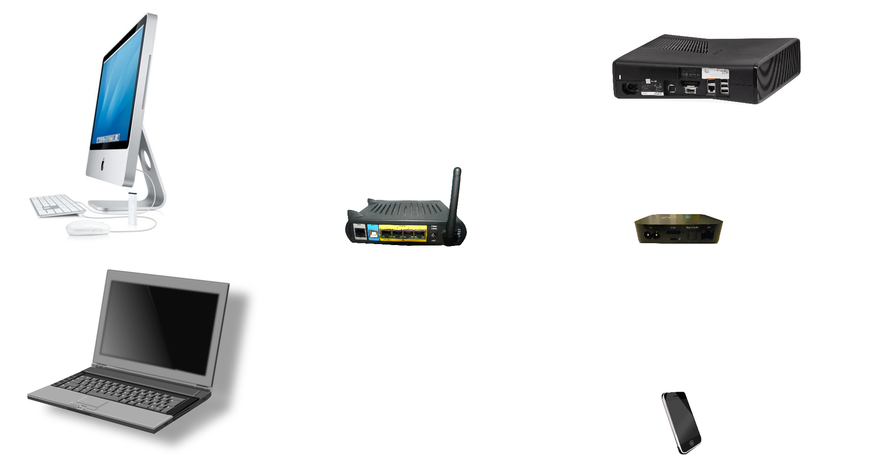
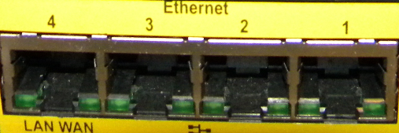
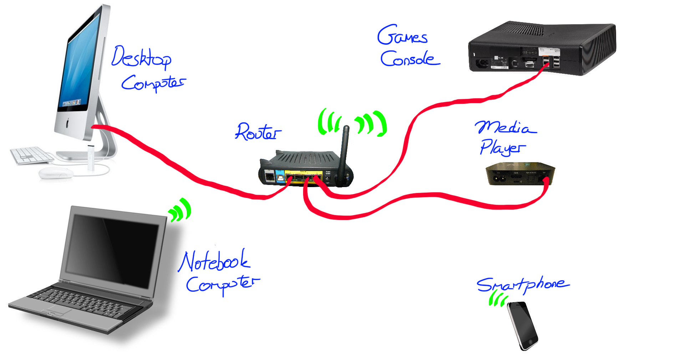
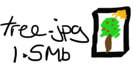
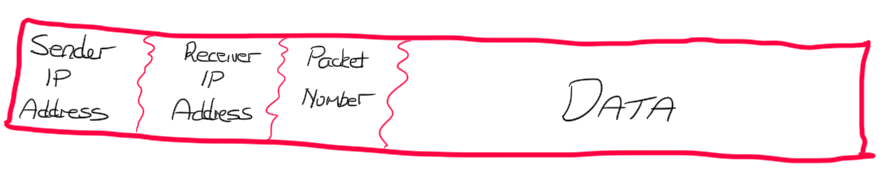

How a Network works
Table of Contents
The internet is a very large network, but at the end of the day it is still just a network of computers.
1 What is a Computer Network?
When ever we connect two or more computers together, so that they can communicate with each other, we have a Computer Network.
Learn It
- There are many different types of network, with names like mesh,/bus/ and ring.

- Most networks you will have used will have been star networks.
- Star networks are named because of the shape they have in diagrams.

- Even though in reality they look more like this:

- With the cables tucked away out of sight and leading back to the central hub.

Research It
- The video below will give you an overview of how a Network works.
Document It
- Having watched the video, try and produce a summary of it for your notes.
2 Packets and Routers
Learn It
- The image below shows the devices that might make up a home network
- Download the image (right click on it), and then open it up in a graphics package such as Paint or Photoshop.

Try It
- Now label the devices using the list below.
- Desktop Computer
- Smartphone
- Router
- Media Player
- Games Console.
- Notebook
Learn It
- We can connect up devices on a network using cable called Patch cables. You've probably got one coming out of the back of the computer you are using right now.
- Patch cables are plugged into Ethernet Ports on devices.
Try It
- On your diagram, draw on wires that link the the Ethernet ports on the Desktop Computer, Media Player and Games Console to the Router

Learn It
- Some devices connect wirelessly.
- WiFi stands for Wireless Fidelity.
- WiFi uses radio waves to allow devices to communicate with each other.
Try It
- On your diagram, add in something to indicate that the Router is able to connect to the Smartphone and Notebook using WiFi.
Research It
- Devices can connect with each other using a few other methods. Use the Web to try and answer the following questions:
- What is Bluetooth?
- What is the range of Bluetooth communications
- What are Fibre Optic cables?
- What does 4G mean?
Learn It
- Your diagram should probably look something like this now.

- Let's imagine that the Desktop Computer is going to send an image file to the Media Player.
- The image is called tree.jpg and has a size of 1.5MB (That's 1.5 Million bytes)

- 1.5 Million bytes is too large to send in one go, so the Desktop Computer needs to break up the file into small chunks called packets
- Each packet has an average size of about 1.5KB (That's 1500 bytes)
- The Desktop Computer breaks up the image into packets, and adds some extra data onto the packet as well

- Each packet is then sent to the Router.
- When the Router receives a packet, it looks at the receiver's IP Address, and then sends the packet onto the correct device on the network.
- The receiving device (in this case the Media Player) receives all these packets, and uses the packet number to assemble them all in the correct order.
- Sometimes a packet get's lost or destroyed on the way. The receiving device will know that a packet is missing, and can use the sender's IP address to ask for the packet to be sent again.
3 A Presentation on Networks
Badge It
- Imagine you had to try and explain how an image is sent over a network, from one device to another.
- Create a presentation (using any software you like), and the image you drew earlier of a network, to explain how a file is sent over a network.
- Your teacher will award you a silver, gold or platinum badge, depending on the clarity of your presentation.